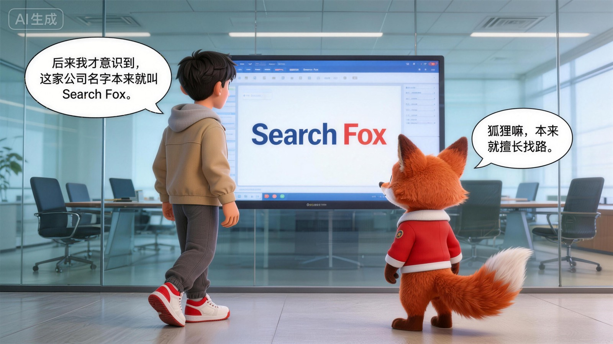

搜狐不能只被概括成一个老互联网名字
如果只用“老牌”来形容搜狐，其实会把它讲窄。 它更像一个穿过多轮互联网变化、依然保有辨识度的平台。
- 它有历史，但不只属于历史
- 它有变化，但没有失去形状
- 它留下来的不只是名字
Chapter 04
在我看来，搜狐最值得被讲的，不只是它出现得早， 而是它一直有自己的内容气质。
比起把搜狐讲成一段互联网历史，我更想讲出它一直保留下来的东西。 那是一种内容平台的气质，也是一种不完全追着风口跑的节奏感。

我更想讲的，不是搜狐做过什么，而是它为什么到今天还保留着自己的表达感。
如果只用“老牌”来形容搜狐，其实会把它讲窄。 它更像一个穿过多轮互联网变化、依然保有辨识度的平台。
在很多平台越来越强调速度和热度的时候， 搜狐身上一直保留着一种“内容感”和“媒体感”。
我更想讲的，不是搜狐曾经有多重要， 而是为什么今天提起它，依然是有意义的。
最后一页，我想用一句更直接的话，结束前面关于搜狐的讲述。